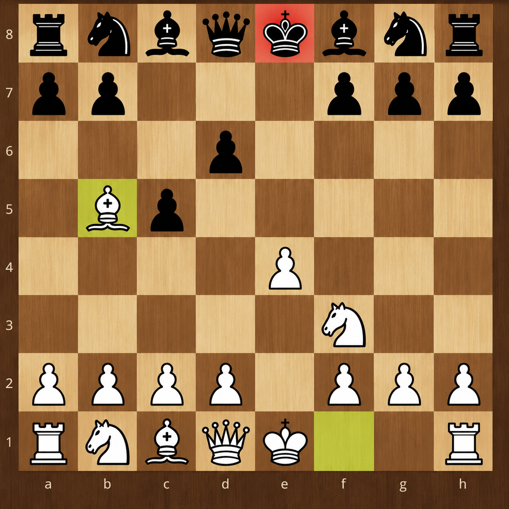

A Defesa Siciliana é uma das defesas mais famosas e utilizadas no xadrez. Ela começa com os movimentos 1. e4 c5, quando as pretas avançam o peão da coluna c para combater o controle das brancas sobre o centro. Seu nome vem da Sicília, região da Itália onde a defesa se tornou conhecida. A principal característica da Defesa Siciliana é criar uma posição desequilibrada desde o início, dando aos dois jogadores oportunidades de ataque. As brancas geralmente procuram desenvolver suas peças e controlar o centro, enquanto as pretas buscam um contra-ataque e procuram aproveitar as fraquezas criadas pela posição das brancas. A Defesa Siciliana possui diversas variações importantes, como a Najdorf, Dragão, Sveshnikov e Clássica. Por ser uma abertura dinâmica, com muitas possibilidades estratégicas e táticas, ela é muito utilizada tanto por jogadores iniciantes quanto por grandes mestres e aparece frequentemente em partidas de alto nível.